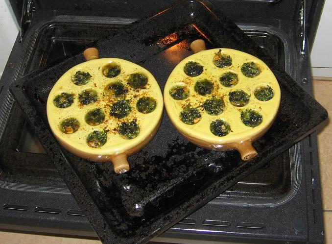
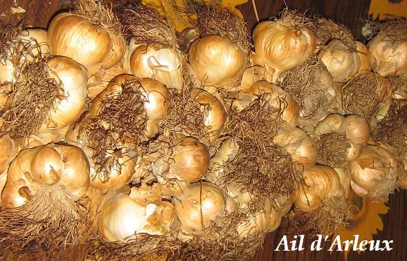

Recette n°157 : Poêlon de moules au beurre, à
l'ail et au persil

Ingrédients
pour 4 personnes
- 1 litre de moules de bouchot, de préférence
- 120 g de beurre au sel salé de Guérande
- 1 bouquet de persil
- 2 grosses gousses d'ail d'Arleux

Préparation
- mettre le beurre à ramollir près du fourneau
(mais ne pas le mettre à fondre)
- passer les moules à l'eau froide rapidement, les
ébarber une par une (c'est long mais indispensable) en jetant
les cassées ou non-vivantes
- les mettre sans eau dans une grande casserole à feu vif,
couvrir et faire sauter en tenant le couvercle pour qu'elles chauffent
bien toutes
- au bout de quelques minutes (pas plus de 3 à 5, car sinon
elles vont durcir), elles doivent pour la plupart être ouvertes
- les égoutter (en gardant et filtrant le jus de cuisson qui
peut être congelé et servir à donner du goût
à une soupe de fruits de mer plus tard)
- mettre le four à chauffer à thermostat 7
- les écailler une par une, les réserver
- préparer la farce en hachant le persil, en pressant l'ail, en
salant et poivrant selon goût, et en mélangeant bien le
tout à la fourchette avec le beure ramolli
- dans les alvéoles des poêlons, mettre les moules (de une
à 3 par alvéole suivant taille) ; compter 6
alvéoles par convive pour une entrée, 12 pour un plat
principal
- compléter par la farce à la spatule (petite cuiller)
- enfourner et laisser la farce bien cuire sans la bruler (une dizaine
de minutes devraient suffire)
- servir aussitôt avec des mouillettes pour aller chercher
le beurre fondu dans les alvéoles
Observations
- recette préparée en octobre 2007 à Rennes pour
nous deux dans des poêlons aimablement offerts par Vanvan quand
nous sommes passés la voir à Montigny